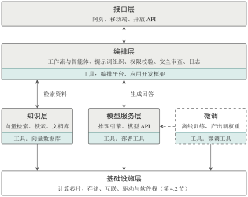

4.5 应用系统工具：从模型到产品
只有模型还算不上产品：它要部署运行，要连接外部知识，要嵌入业务流程，有时还要针对特定任务微调。每个环节都从零搭建显然不现实。本节按“负责哪一段链路”把常用工具分为部署工具、微调工具、向量数据库、应用开发框架和编排平台五类，它们各司其职、组合使用。选型时，先确定需求落在哪一段链路，再在同类工具之间比较。
4.5.1 一个大模型应用由哪些部分组成
下面以一个企业内部的知识问答助手为例。用户在网页上提问后，系统需要依次完成以下步骤：判断用户身份和权限，从内部文档中检索相关资料，把问题和资料组织成提示词并交给模型生成回答，把带有引用出处的回答返回给用户，并记录日志以便评估和改进。其中，“运行模型”只是一个环节。
图 4-11 给出了这类应用的典型分层：接口层负责与用户交互；编排层负责流程控制、权限校验、工具调用与安全审查；知识层提供向量数据库、搜索引擎和文档来源；模型服务层由推理引擎运行模型并提供 API；基础设施层即第 4.2 节介绍的算力资源。这一分层是对常见组织方式的归纳，并非所有产品都必须恰好分为五层。

图 4-11 大模型应用的典型分层与五类工具的位置。每个框底部的色带标出该层对应的工具类别。编排层发起检索与模型调用；微调（虚线框）在线下进行，产出的权重交给模型服务层加载
4.5.2 五类工具的定位
根据所负责的链路，常用工具可分为五类（表 4-6）。需要注意，这是按功能定位划分的分类，而非严格互斥的技术分类：许多产品同时具备多种能力。例如，某个部署工具既能管理模型，也能对外提供 API；某个编排平台既能搭建知识库，也能集成智能体。选型时应先明确工具负责哪一段链路，再比较具体产品。
表 4-6 五类应用系统工具的定位
| 类型 | 代表工具 | 主要功能 | 容易混淆之处 |
|---|---|---|---|
| 编排平台 | Coze、Dify、FastGPT、MaxKB | 可视化搭建工作流、接入知识库、发布应用 | 不是训练或计算框架 |
| 应用开发框架 | LangChain、LlamaIndex、LangGraph | 以代码连接模型、工具与数据，实现控制逻辑 | 不提供算力，也不运行模型 |
| 向量数据库 | Milvus、Faiss、Pinecone、Weaviate | 向量存储、近似最近邻检索、元数据过滤 | 只负责检索，不能代替模型生成回答 |
| 微调工具 | LLaMA-Factory、Transformers + PEFT、XTuner、Unsloth | 组织数据与训练配置，支持 LoRA 等方法 | 与驱动、编译器不在同一层 |
| 部署工具 | Ollama、LM Studio、vLLM、SGLang、TGI | 加载模型、执行推理、提供 API | “方便运行”与“高并发吞吐”是不同目标 |
4.5.3 部署工具：本地运行与高并发服务
部署工具可以按目标分为两类。
面向易用的本地运行工具 Ollama 是开源的跨平台工具，一条命令（如 ollama run <模型名>）即可下载并运行模型，提供兼容 OpenAI 格式的 REST API，并通过量化等手段使模型能够在个人电脑的 CPU 或 GPU 上运行。LM Studio 则提供图形界面，便于浏览、下载和试用模型。这类工具降低了模型部署运行的门槛，但它们不会改变模型的参数量和知识截止时间，也不会提升模型本身的能力。部分工具支持导入在其他工具中微调好的权重，但这并不等于工具本身完成了微调训练。
面向吞吐的推理引擎 vLLM、SGLang、TGI 等推理引擎面向多用户在线服务，其核心是第 4.4.3 小节介绍的技术：PagedAttention 管理 KV 缓存，连续批处理调度请求，并集成高效注意力内核与量化支持[16]。llama.cpp 则以 C/C++ 实现、对 CPU 和消费级硬件友好，常作为本地工具的底层引擎。
二者的取舍可以概括为：面向个人体验、离线开发和小规模试用时，优先考虑易用的本地工具；面向多用户并发、关注吞吐与尾延迟的生产服务时，应选用推理引擎，并按第 4.4.4 小节的方法实测。
4.5.4 编排、检索与微调工具
编排平台与应用开发框架 LangChain 等应用开发框架以代码形式连接模型、工具和数据源，用“链”或“图”组织多步流程；Coze、Dify 等低代码平台则通过可视化节点搭建问答、审批和知识库等业务流程。流程设计中有一个重要的权衡[19]：对于步骤固定、重复执行的任务，采用预先定义的工作流（workflow）更便于测试和管控；对于目标多变、步骤难以预先确定的任务，可引入能够自主选择工具、规划步骤的智能体（agent），同时必须设置权限边界和停止条件。智能体并非自主性越高越好，自主性越高，出错的代价和外部副作用通常也越大。
向量数据库与检索增强 在检索增强生成（RAG）应用中，文档先被切分成片段，用嵌入模型转换为向量后存入向量数据库；用户提问时，系统检索与问题最相似的片段，交给模型参考作答。Milvus 是开源的分布式向量数据库，支持海量向量与元数据的存储、多种索引和相似性检索，采用存储与计算分离的云原生架构[18]；Faiss 则是一个向量相似性检索库，需要嵌入到其他系统中使用，在部署和扩展方式上与完整的数据库不同。需要注意，向量相似并不等于事实正确，实际系统通常还要结合关键词检索、重排序、文档权限控制和回答评估。
微调工具 LLaMA-Factory 等工具将数据处理、训练配置、LoRA/QLoRA 等参数高效微调方法[13],[14]以及评估导出集成在一起，并提供网页界面，降低了实验管理的门槛。但它们仍然依赖底层框架和硬件，并不会消除优化器状态和激活值带来的开销。要判断一个微调任务能否在单卡上完成，仍需按第 4.3.3 小节的方法，根据显存、量化方式、训练精度、批大小和序列长度进行估算。
辨析
“先微调还是先做 RAG”取决于要解决的问题。如果痛点是知识需要频繁更新、回答需要给出出处，RAG 通常是成本更低的起点；如果痛点是输出风格、特殊格式或特定任务行为，才进一步考虑微调。二者也可以结合使用。
本节要点
“运行模型”只是大模型应用的一个环节，完整的产品还需要接口、编排、知识和基础设施。
五类工具按负责的链路区分；选型时先确定链路，再比较产品。
本地运行工具追求易用，推理引擎追求吞吐；工作流追求可控，智能体追求灵活。